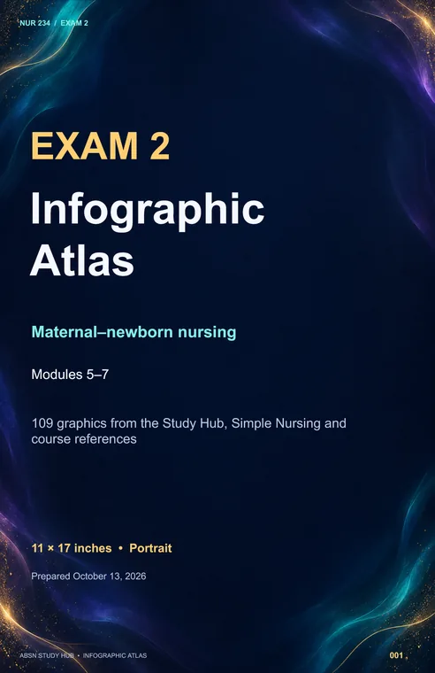
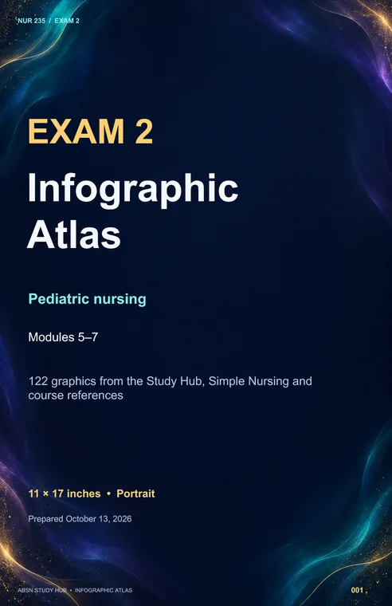

ABSN STUDY HUB · MODULES 5–7
Your Exam 2 infographic atlas
Find a topic, note its slide number, then open your course deck. Both PowerPoints use 11 × 17-inch portrait pages with a navy, teal and violet background.

About the original graphics and teaching notes
Source branding is preserved. Some older figures have limited resolution, and their wording may differ from current guidance. Selected clarifications appear below and on the corresponding slides. This compilation is not a complete clinical review of every source claim. The source links allow you to check the original context.
Slide titles, source labels and notes are editable in PowerPoint; text inside an original infographic remains part of the image.